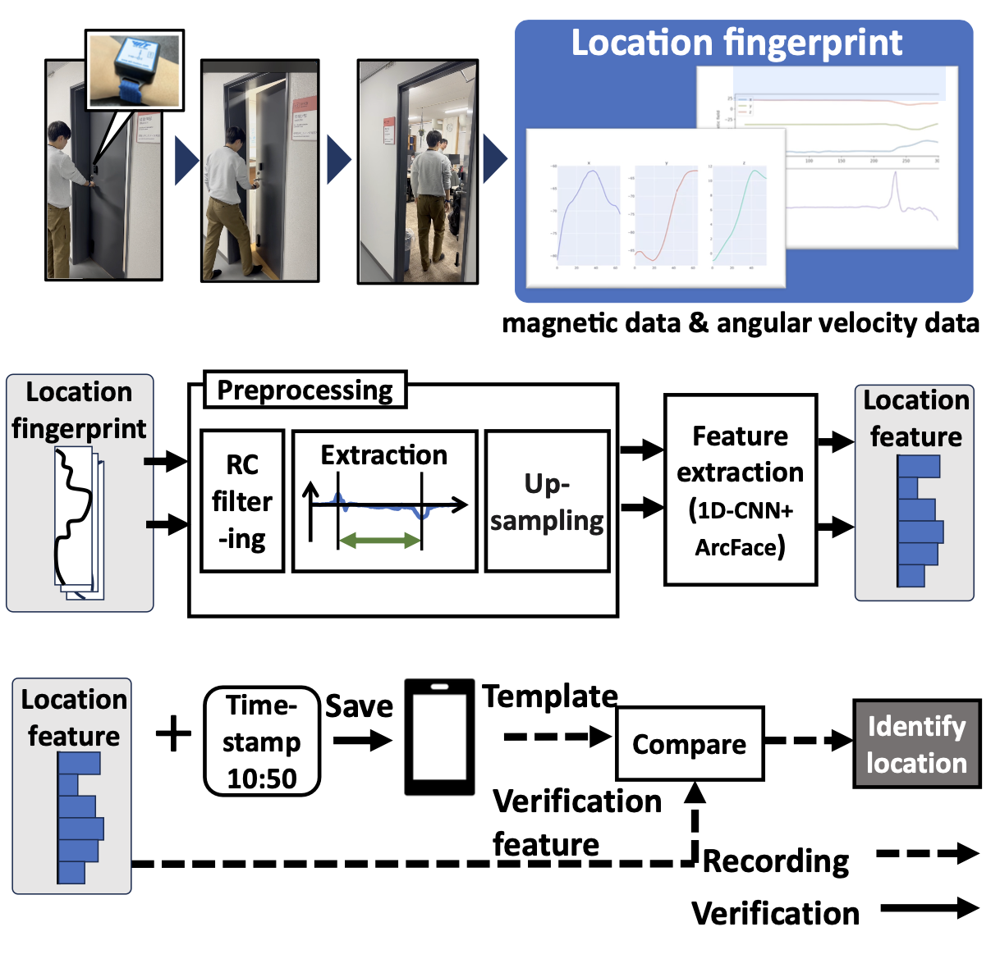

Proposed Method
Obtaining Sensor Information
Magnetic and angular velocity data are collected along three axes. The magnetic data is used as the location fingerprint, while the angular velocity data assists in preprocessing the magnetic information.
Preprocessing
Preprocessing involves several steps to prepare the data for analysis. First, high-frequency noise in the magnetic and angular velocity data is filtered using an RC low-pass filter to retain important low-frequency information:
$$ S_{\text{filtered}} = \alpha \cdot S_{\text{current}} + (1 - \alpha) \cdot S_{\text{previous}} $$
Here, \( S_{\text{filtered}} \) is the filtered sensor information, \( S_{\text{current}} \) is the newly acquired data, and \( S_{\text{previous}} \) represents the previously recorded data. The coefficient \( \alpha \) is set to 0.8.
After filtering, the system extracts the specific action section related to door-opening by detecting peaks in the angular velocity data. This isolates the portion where the wrist rotates during doorknob manipulation. Next, normalization is applied to address internal magnetism fluctuations from the device, which can affect the magnetic data. The magnetic data is standardized using:
$$ x' = \frac{x - \bar{x}}{s} $$
Here, \( x' \) is the normalized data, \( x \) is the original data point, \( \bar{x} \) is the mean, and \( s \) is the standard deviation. This ensures data from different sessions can be consistently compared.
To ensure uniform data lengths across all location fingerprints, resampling is performed using 3D spline interpolation. This technique smooths the time-series data and adjusts it to the required input size for the classifier:
$$ S_i(x) = a_i + b_i(x - x_i) + c_i(x - x_i)^2 + d_i(x - x_i)^3 $$
Here, \( x_i \) represents the position of a data point in the time-series, and \( S_i(x) \) is the interpolated value between data points \( x_i \) and \( x_{i+1} \). This ensures that the location fingerprints have uniform data lengths before being input into the 1D-CNN model for feature extraction.
Machine Learning Model
The machine learning model used is a one-dimensional convolutional neural network (1D-CNN) combined with ArcFace, a distance metric learning method. The lightweight 1D-CNN, with 2.07 MB and 12,842 parameters, consists of three convolutional layers with ReLU activation and pooling layers to reduce feature dimensionality.
ArcFace enhances location feature distinction by calculating similarity scores. It computes the inner product of input features and a class matrix, applying a margin to the correct class score. The 1D-CNN produces a 64-dimensional feature vector, which is used to determine whether two location fingerprints match based on the similarity score.
